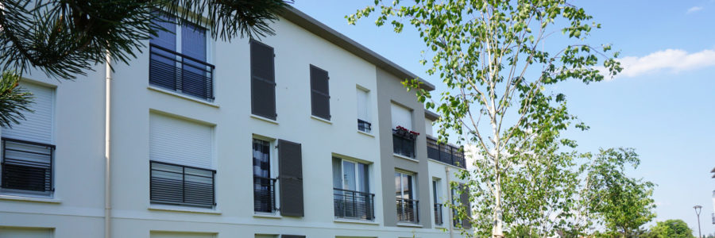
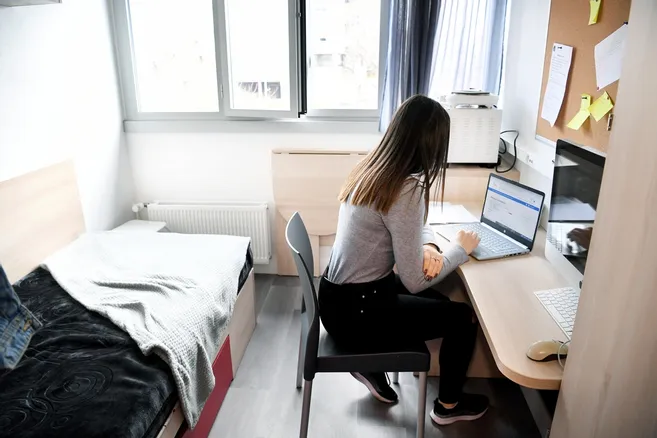
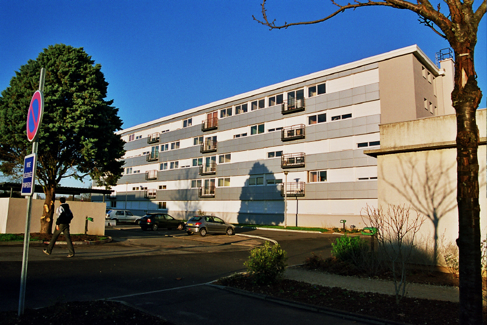
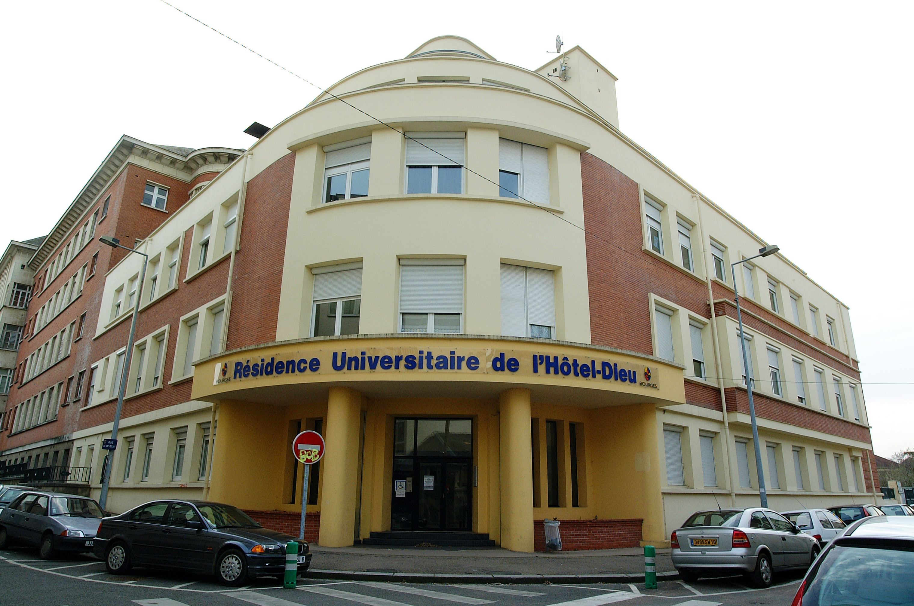
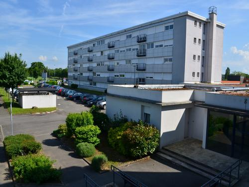
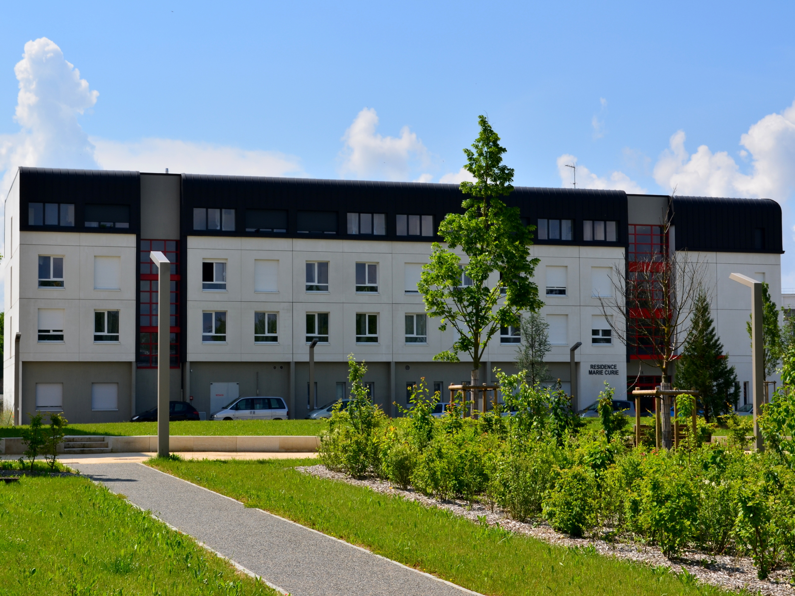

HÉBERGEMENT ÉTUDIANTE
De nombreuses options sont à votre disposition pour vous loger pendant vos études en France. Vous aurez le choix entre un logement dans le secteur public ou dans le privé, en résidence étudiante ou en appartement, seul ou en-colocation, dans une chambre chez l’habitant ou dans un logement indépendant… Pas de panique, nous vous aidons à décrypter tous les types de logements à la disposition des étudiants et nous vous accompagnons dans vos recherches.
Dans tous les cas, nous vous recommandons de commencer vos recherches le plus tôt possible. N’hésitez pas à réserver un logement, même temporaire, pour avoir une adresse où poser vos valises en arrivant. Vous aurez ensuite le temps de chercher sereinement votre logement permanent.
Pensez également à vous adresser à votre établissement. Certains établissements, notamment les Grandes Ecoles, disposent de leur propres de logements ou d’une plateforme de recherche de logements réservées à leurs étudiants.
Pour faciliter vos recherches, nous avons distingué deux manières de se loger pour les étudiants à Bourges:
Se loger au sein de résidences ou de foyers. Cela présente plusieurs avantages : loyers modérés, chambres déjà meublées, et une vie en collectivité très appréciée des étudiants.
Se loger dans le parc immobilier privé en passant par une agence immobilière ou auprès d’un particulier. C’est dans ces logements que vous pourrez faire de la colocation avec d’autres étudiants ou bien « loger chez l’habitant » en louant une chambre dans un appartement.

CHOISIR SON LOGEMENT
SE LOGER EN RÉSIDENCE ÉTUDIANTE OU EN FOYER
Les résidences universitaires des CROUS*
Les résidences des CROUS sont publiques et subventionnées par l’Etat. C’est le logement le plus recherché par les étudiants. Il présente en effet de nombreux avantages : le loyer est bas (450 Euros à Paris, 350 Euros en régions en moyenne) avec la possibilité de bénéficier des aides au logement de la CAF (Caisse d'Allocations Familiales) ; les lieux d’études sont proches et la vie sociale est riche. Le seul inconvénient des chambres des CROUS ? Il y a beaucoup de demandes et elles ne sont pas assez nombreuses pour accueillir tout le monde.

Comment réserver une chambre en résidence universitaire du CROUS ?
1. Pour faire une demande de réservation de logement en résidence universitaire gérée par le CROUS, les étudiants internationaux doivent directement passer par la plateforme trouverunlogement.lescrous.fr à partir du 9 juillet 2021. Vous y trouverez toutes les informations et précisions pour choisir votre logement dans une résidence CROUS.
2. Vous pouvez aussi vous renseigner auprès de votre futur établissement d'enseignement du supérieur pour voir si des solutions de logement spécifiques peuvent vous être proposées.
3. Vous pouvez enfin consulter les offres de logement disponibles, y compris celles proposées chez des particuliers sur Lokaviz.fr, la centrale du logement étudiant. Le label « Lokaviz » garantit aux étudiants l'assurance d'être logés décemment et en confiance.
CROUS à Bourges

Les Gibjoncs
Les équipements de la résidence universitaire 'Les Gibjoncs' conviennent aux personnes à mobilité réduite. Cette résidence, accessible par les transports en commun, possède un parking réservé pour les voitures et les deux-roues. Les étudiants auront accès à une salle de restauration, une salle de travail, une salle de fêtes ainsi qu'une laverie. L'accès est filtré par des digicodes et un gardien surveille le site. Chaque chambre est équipée d'une prise téléphone et d'une prise Internet. Une pharmacie, une supérette et un resto U se trouvent à proximité de cette résidence gérée par le CROUS d'Orléans-Tours.

Hôtel Dieu
Accessible par les transports en commun, la résidence universitaire de 'l'Hôtel-Dieu' dispose d'un parking réservé avec emplacement pour les deux-roues. Chaque chambre est dotée d'une prise téléphone et les visiteurs devront s'identifier par l'intermédiaire des interphones. Notons que les équipements sont adaptés aux personnes à mobilité réduite. Les étudiants bénéficieront de la supérette, la pharmacie, l'installation sportive et l'installation culturelle du quartier. Pour les formalités administratives, vous pouvez contacter le CROUS d'Orléans-Tours.

Amaryllis
Gérée par le CROUS d'Orléans-Tours, la résidence universitaire 'Amaryllis' à Bourges, propose des studios équipés de sanitaires individuels. Chaque chambre dispose aussi de plusieurs prises de connexion : antenne, téléphone, câble et Internet. La résidence met également à la disposition des résidents un espace buanderie équipé de laves-linge et de sèches-linge. Vous trouverez à proximité de la résidence, un resto U et des arrêts de bus.

Marie Curie
Au sein de la résidence universitaire 'Marie Curie' à Bourges, les étudiants auront accès à une salle de travail et une laverie disposant de laves-linge et de sèches-linge. Pour la télécommunication, une prise antenne, une prise téléphone et une prise internet sont installées dans chaque chambre. Le site dispose d'un local de stationnement pour les deux-roues, et se trouve à quelques mètres d'un arrêt de bus. Si vous avez besoin de plus d'informations, vous pouvez contacter le CROUS d'Orléans-Tours.
Les résidences étudiantes privées
Elles sont une bonne alternative si vous n’avez pas réussi à obtenir une chambre du CROUS. Les tarifs des résidences privées sont souvent plus élevés que ceux des CROUS mais ils restent compétitifs sur le marché du logement étudiant. Les avantages au quotidien seront nombreux : vie en collectivité, chambres meublées, internet, laverie, salle de sport …
SE LOGER DANS LE PARC IMMOBILIER PRIVÉ
Si vous n’avez pas trouvé de chambre en résidences ou en foyer, vous pouvez vous tourner vers les agences immobilières ou les particuliers. Vous pourrez y louer un logement entier ou bien une chambre individuelle dans un appartement.
Le logement étudiant auprès de bailleurs privés
Vous pouvez vous rabattre vers un bailleur privé, particulier ou agence immobilière, pour trouver une chambre ou un appartement.
Pour réduire vos frais, vous pouvez opter pour la colocation. Vous partagerez le logement avec d’autres étudiants, ce qui permet de diviser sensiblement le coût du loyer : une solution économique et conviviale pour bénéficier d’un logement étudiant.
PLATEFORMES D'HÉBERGEMENT